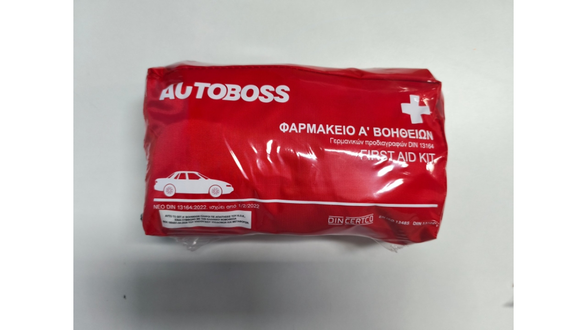

Decoding EU Customs: 5 Non-Negotiable Compliance Details for DIN 13164 First Aid Kits in 2026
MAY 29, 2026

As cross-border medical regulations stiffen across Europe, importing automotive first aid kits is no longer just about filling a bag with bandages. In 2026, European customs authorities and strict workplace safety audits are rejecting shipments over a single missing symbol or an outdated tracing code.
For PPE distributors and medical wholesalers, a customs seizure means delayed contracts, heavy fines, and wasted capital.
To help you mitigate these regulatory risks, let’s analyze a fully compliant European vehicle first aid kit setup, using real production units as a benchmark.
1. The Verification Backbone: Valid DIN CERTCO Marking
A simple text print saying “DIN 13164” on the outer bag is a major red flag for EU customs. Legitimate compliance requires verifiable certification. Look at the lower right corner of the production unit below—the DIN CERTCO mark, sitting alongside the EN ISO 13485 quality management stamp, serves as the ultimate passport for customs clearance. It proves the contents are manufactured under strict medical-grade regulations rather than unverified assembly workshops.

2. The 2022 Standard Iteration Check
Are your current stocks utilizing the updated protocols? The European automotive first aid standard underwent a significant revision. Compliant kits must clearly display the NEO DIN 13164:2022 designation on the outer casing. Importing older configurations leaves your clients legally exposed during vehicle inspections and corporate safety audits.
3. On-Demand Tracing: UDI Matrix & Tracing Codes
Static packaging text is a relic of the past. Under modern European medical device guidelines, tracking data must be printed on demand to stay accurate. Every compliant batch must feature a dedicated backing label including:
- The UDI DataMatrix Code: A unique device identifier required for digital supply chain logging.
- The LOT Number: Crucial for immediate recall capability.
- The Medical Hourglass Symbol: Replacing the outdated “EXP” text, explicitly followed by the exact expiration date.

4. Destination Language Localization
EU regulations demand that product component lists and critical hazard warnings must be presented in the national language of the destination country. For instance, the illustrated unit features full localization in Greek (ΦΑΡΜΑΚΕΙΟ Α' ΒΟΗΘΕΙΩΝ), tailored precisely for local compliance. Failing to localize the text guarantees custom hold-ups.
5. Legal Accountability: Local Importer Information
Every medical device batch entering Europe must be linked to a legal entity within the territory. A fully compliant backing label must clearly declare the Authorized Representative or Local Importer details (as shown on the back label sample: Importer: 3 LINES S.A., Greece). This ensures seamless transparency that customs officers look for during random sampling.
How GoSafeMed Minimizes Your Compliance Burden
Navigating these granular details while managing factory volume requirements can be a supply chain nightmare. If you force separate manufacturing lines for English, German, or Greek packaging, traditional factories will demand massive commitments per language, locking up your cash flow.
At GoSafeMed, we solve this through our Flexible On-Demand Labeling Setup.
Under a single 2,000-unit total MOQ, our backend supply chain allows you to split the batch. We utilize standard, premium neutral kits and print customized, high-resolution backing labels tailored to your specific destination markets—complete with your custom logo, localized language, and precise tracing codes (LOT/UDI).
Protect your procurement capital and ensure zero-friction customs clearance. Discover our compliant medical and rescue lines at www.gosafemed.com or reach out to our regulatory team today.